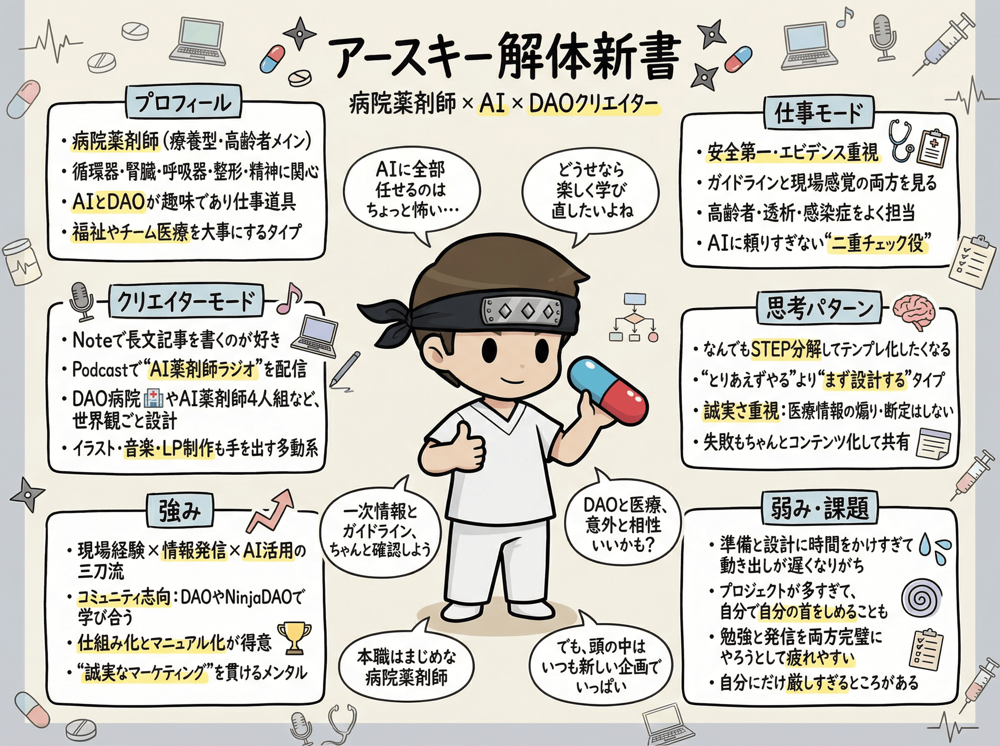

アースキー | 現役病院薬剤師 × AIクリエイター
About
アースキー（EarthKey）について

テーマ別紹介
仕事モード — 病院薬剤師として
- 救急・高齢者医療を中心に、地域医療・在宅・病棟業務・院内感染に関わる
- 安全第一・エビデンス重視。ガイドラインと現場経験の両立を大切にしている
- 薬剤師としての専門知識にAIを組み合わせ、業務効率化を日々実践
- 「AIに補助してもらう」ことで、患者と向き合う時間を増やすことを目指している
クリエイターモード — AIクリエイターとして
- Noteで医療×AI×DAOをテーマにした長文記事を執筆
- Podcastで「AI薬剤師ラジオ」を配信中（Spotify）
- AI画像・AI動画・LP制作など、生成AIを活用した制作活動
- Web3・DAOコミュニティでの発信・交流も積極的に行っている
思考パターン
- 「とりあえずやってみよう」を行動で示すタイプ
- ステップを踏んで体系的に取り組むことを好む
- 誠実さを大切に、丁寧な情報提供を心がけている
- 発見したことをそのままの熱量で発信・共有したい
強み
- 環境構築・情報統合が得意。AIツールを組み合わせて活用する応用力
- Web3・DAOコミュニティ内での継続的な発信・交流実績
- 仕組み化・システム化による情報管理（Obsidianを中心に）
- 医療の専門性 × AI実践力という希少な掛け合わせ
Profile
| 名前 | アースキー（EarthKey） |
|---|---|
| 本業 | 現役病院薬剤師（救急・高齢者医療） |
| 発信テーマ | 医療 × AI × DAO |
| 主な活動 | Note 執筆 / Podcast 配信 / X 発信 / AI制作 |
| 所属コミュニティ | Web3 / DAOコミュニティ |
| X | @EarthGigantea |
| Note | note.com/rain_cure |